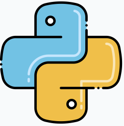
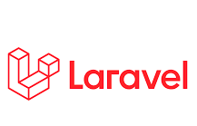
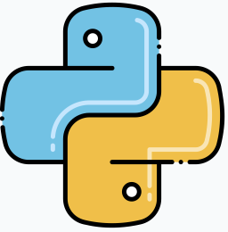
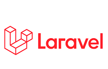

Piter Kubo Chagas
Desenvolvedor 💻
Eu sou mais um apaixonado por tecnologia. Por 10 anos trabalhei na area de infraestrutura e suporte
ao usuario final em uma Corretora de Câmbio bem conhecida em SP. Durante esse periodo, fui convidado
a fazer parte da equipe de desenvolvimento dessa corretora. Aceitei de imediato e encarei como mais uma desafio não
só apenas profissional, mas sim pessoal. Hoje para mim, trabalhar com desenvolvimento é uma terapia e
superação, pois cada etapa que passamos com projetos, se torna gratificante a cada solução resolvida.
Para ter sucesso é necessário amar de verdade o que se fazer
("Steve Jobs")

 


